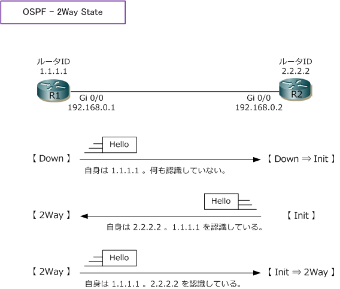
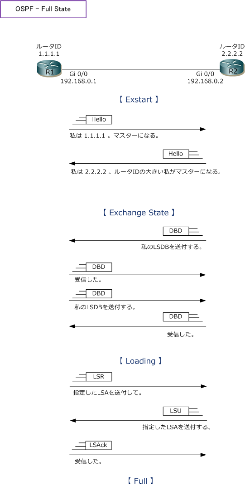

OSPF - Neighbor / Adjacency
OSPFネイバー関係（ Neighbor ）の確立 - 2Way State
ここでは、OSPFルータがネイバー関係を確立する流れを、リンクアップ時の最初から詳細に見てみましょう。
| Step | State | 説明 |
|---|---|---|
| ① | Down State | 停止状態。OSPFルータを起動した直後の状態。リンクアップするとHelloパケットの送信を開始。 Helloパケットはマルチキャストアドレス ( 224.0.0.5 ) 宛てに送信されて隣接ルータに到達する。 |
| ② | Init State | 初期状態。ネイバールータ（R1）から Helloパケットをはじめて受信した状態。このHelloパケット を受信すると、R2ではネイバールータにR1を追加する。 |
| ③ | 2Way State | 双方向状態。ネイバールータ（R1）の存在を認識したOSPFルータがHelloパケットを送信して、 そのHelloパケットをネイバールータ（R1）が受信した状態。R1ではネイバールータにR2を追加。 |

OSPFルータには、識別のためにルータIDが割り当てられます。ルータIDは32ビットの値でIPアドレスと同様 4オクテットで区切り10進数で表記します。ルータIDは重複しないよう割り当てる必要があります。ルータID の決定は以下の優先順位 ① → ② → ③で決定します。上図では明示的に①を設定した事を前提としています。
① router-id コマンドで設定した値 ② ループバックインターフェースの中で最も大きいIPアドレス ③ アクティブなインターフェースの中で最も大きいIPアドレス
OSPFアジャセンシー関係（ Adjacency ）の確立 - Full State
OSPFルータは2Way State状態になりDR/BDRの選出が完了すると、アジャセンシー関係（Adjacency）に 至るルータ間では、LSAを交換してLSDBを同期するフローに移行します。そのフローを以下で解説します。
| Step | State | 説明 |
|---|---|---|
| ④ | Exstart State | 起動後状態。どちらのルータからLSAに関するデータの送信を開始するかを決定するプロセス。 ルータIDが大きいルータから送信を開始。送信開始側をマスター、もう一方をスレーブと呼ぶ。 |
| ⑤ | Exchange State | 交換状態。マスターからDBD（LSDBに格納されるLSAリスト）パケットを送信し相手からも送信。 |
| ⑥ | Loading State | ロード状態。受信したDBDと自身のLSDBを比較し、不足分のLSAについてはLSRで情報を要求。 |
| ⑦ | Full State | 完全状態。隣接ルータと完全にLSDBを同期できた状態。これにより同期プロセスが完了。 |

LSUパケットは、ネイバーから要求されたLSAを送るために使用されるパケットですが、このLSUに含まれる LSAには複数のタイプが存在します。LSAの種類によりフラッディングされる範囲や役割が異なります。この LSAタイプには 1 ～ 11 までありますがCiscoでサポートしているのは 1 ～ 5 、7 となります。